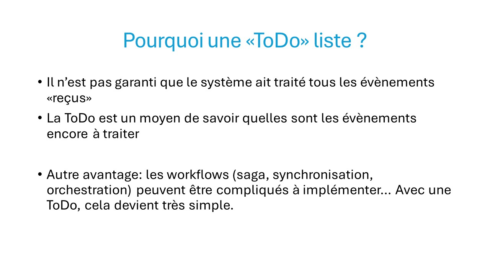
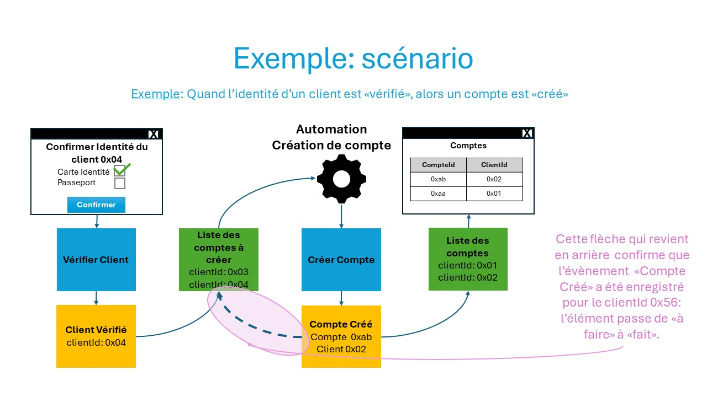
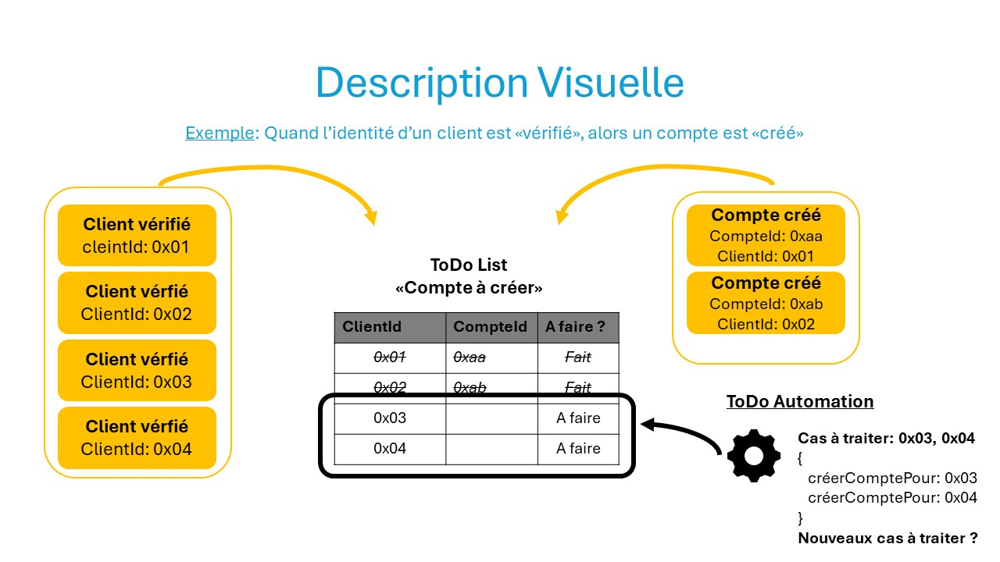
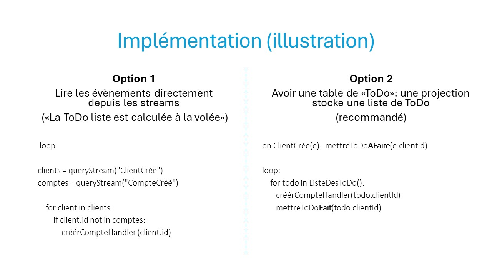
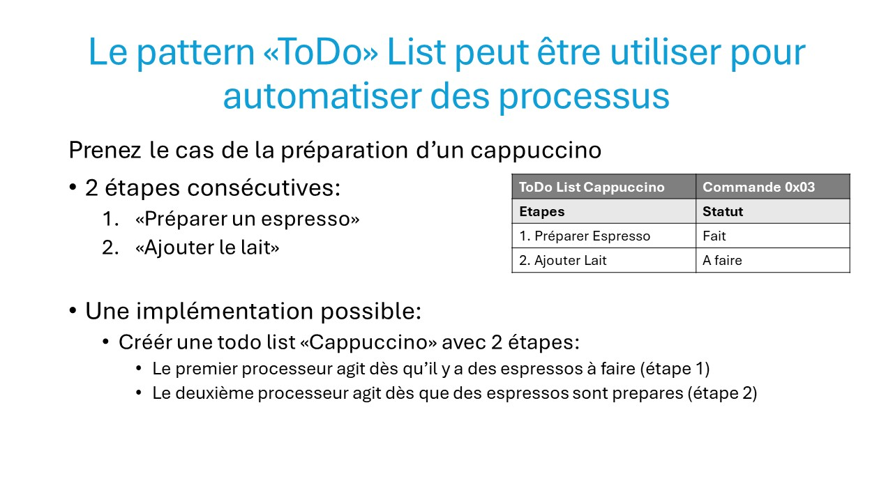
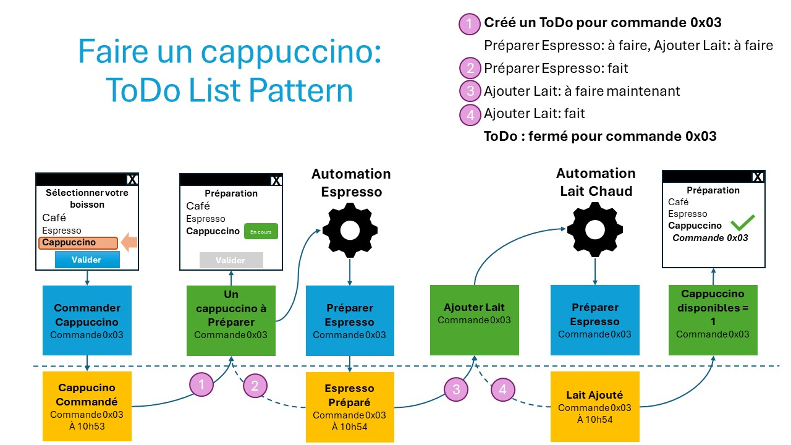
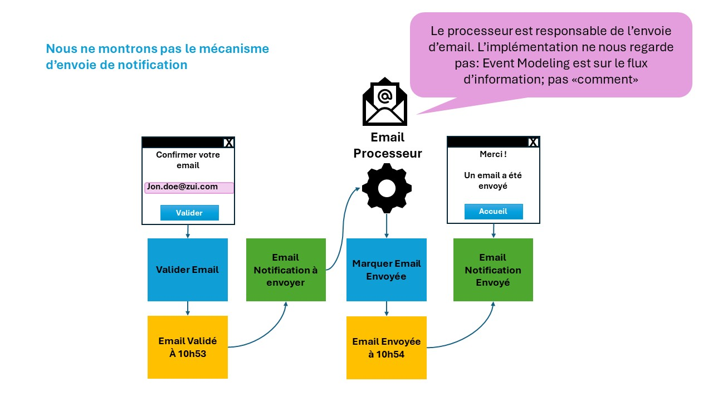
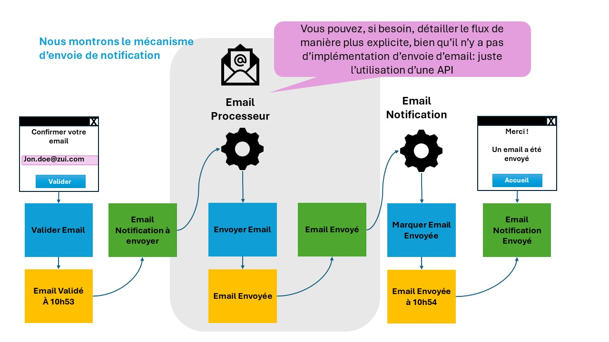
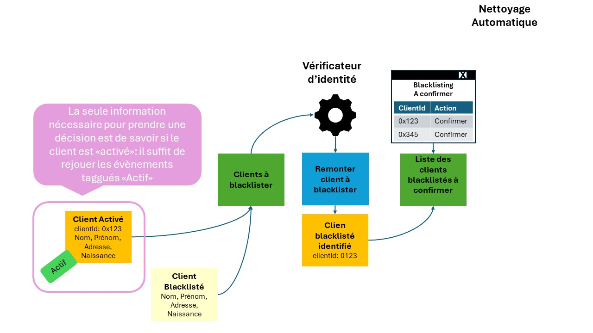
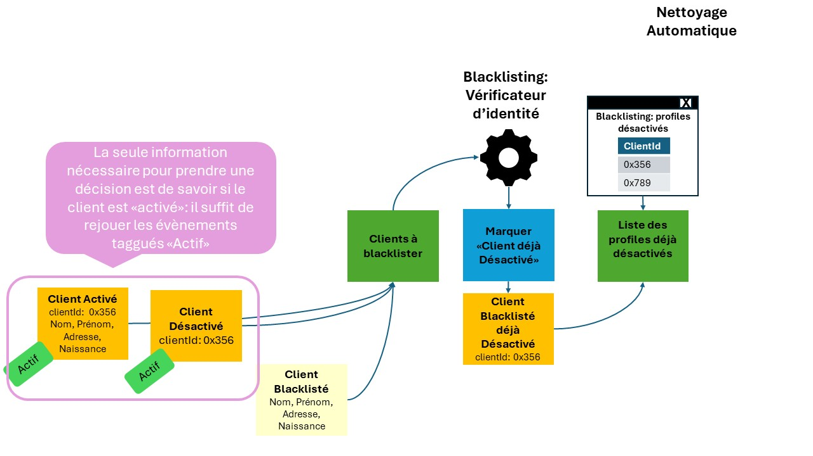

ToDo List Pattern
Le ToDo List Pattern est simple… mais j’ai mis du temps à le comprendre et à l’appliquer.
C’est pourtant un pattern très puissant : à la fois pour éviter de perdre des messages à traiter,
mais aussi pour construire des workflows (sagas).
Quelques explications







Git Pattern
Le Git Pattern est exactement comme git, excepté au lieu de versionner du code, vous versionnez des données comme des revenus/dépenses dans le cadre de prestations sociales, de taxation, de devis, de factures etc
Cliquez pour lancer la démo
Notification Pattern
C'est juste un exemple qui m'a marqué "Notifications" par email ou sms etc : comme ce n'est pas votre système qui envoie la notification, mais un service, ne pas utiliser "Envoyer Notification" mais "Marquer Notification Envoyée"
Option 1 - Notifications: seul le flux d'information de notre système est explicite (cas normal)"

Option 2 - Alternative: le flux du service externe est aussi montré explicitement (si nécessaire, dans certains cas)"

DCB Pattern - Dynamic Consistancy Boundary... Quel nom!
Comme beaucoup de concept en Event Modeling / Event Sourcing, DCB est simple une fois compris. Ce pattern est plus en lien avec Event Sourcing qu'Event Modeling bien que les informations viennent du modèle
2 cas d'usage
Cas d'usage 1: "smart replay"
Le cas "Adam du 08.10.2025: j'ai découvert bien que dans mes prototypes j'avais appliqué ce principe (par paresse).
A partir d'une projection, l'étape suivante est de prendre une décision. Normalement, on prend l'aggrégat en rejouant toutes ses évènements pour connaitre son état et appliquer la règle métier pour s'assurer de prendre la bonne décision.
La question est pourquoi rejouer l'agrégat alors que je n'ai peut-être besoin de connaitre quelques évènements.
La question qui suit: pourquoi des faits doivent appartenir à des agrégats?
Et la question qui suit: est-ce que les agrégats ne sont pas artificiels?
("Kill the aggregates" par Sara Pellegrini est une video à regarder).
Exemple: vous recevez un évènement comme quoi un client est blacklisté par une autre banque: pour fermer son compte, vous avez juste besoin de savoir que c'est un client pour la blacklister dans votre banque (règle simple). Sans suite une suite d'actions en fonction des comptes ouverts à bloquer
Il s'agit donc de ne rejouer que les évènements qui contribuent à la décision: ici, de voir si le client est un client de la banque.
D'ailleurs, la projection contient cette information: les clients à blacklister et les clients qui sont actifs.
C'est un peu un "smart" replay. Et pour y arriver, des frameworks comme Axoniq permettent de tagger les évènements.
Axoniq ne rejout dans ce cas que les évènements taggués dans le contexte de la décision à prendre."
Cas 1: le client a été activé. C'est le seul fait qui m'intéresse.

Cas 2: le client a déjà été désactivé. Ci-dessous: les deux seules faits qui m'intéresse.

Cas d'usage 2: cas initial